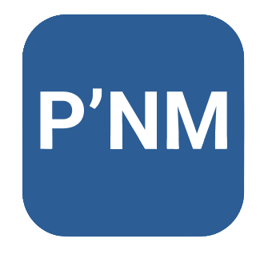

<mat-toolbar>
  
  <button
    mat-button
    [routerLink]="['/vehicles']"
    routerLinkActive="active-link"
  >
    <mat-icon>local_shipping</mat-icon>&nbsp;Véhicules
  </button>
  <button mat-button [routerLink]="['/lists']" routerLinkActive="active-link">
    <mat-icon>fact_check</mat-icon>&nbsp;Listes
  </button>
  <button mat-button [routerLink]="['/users']" routerLinkActive="active-link">
    <mat-icon>group</mat-icon>&nbsp;Utilisateurs
  </button>
  <button mat-button (click)="logout()" class="logout">Déconnexion</button>
</mat-toolbar>
